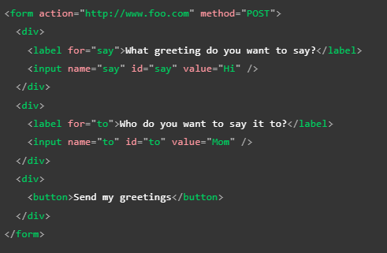
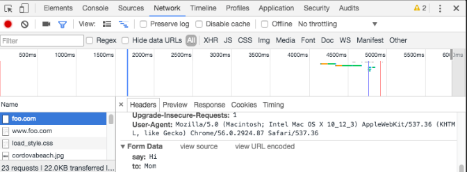

Envio de los datos de un formulario HTML
Si se simplifica el funcionamiento de las paguinas web se podria definir como la metodologuía "cliente/servidor" la cual consiste en que un "cliente" la mayoria de los casos un navegador realiza una solicitud al servidor solicitando los datos requeridos para llevar a cabo una acción, a su vez el servidor retorn una respuesta hacia el cliente con dichos datos. Por su lado todas estas consultas y respuestas son enviadas atravez de cietos "protocolos" de transmisión de datos, en general uno de los más simples y estandarizados en la web es el protocolo HTTP.
En ese sentido un formulario no es más que un mecanismo simple para que el usuario pueda realizar una consulta o enviar datos hacia un servidor atravez del protocolo HTTP, de hecho basicamente todos los atributos de un formulario van enfocados a configurar la solicitud que se realizará, a su vez los forularios poseen dos atributos en particular los cuales estan enfoncados en definir de que forma se enviaran los datos haca el servidos, estos atributos son:
Atributo Action
-
Este atributo define hacia donde se envaran los datos, su valor debe de ser una URL relativa o absoluta valida, en caso de que esta URL no sea definida entonces los datos seran enviados por defecto a la uicación de la paguinaque contiene el formulario, es decir a la paguina actual.
A continuación se muestran las tres formas en las que se puede indicar la URL:
Uso de una URL absoluta:

Uso de una URL relativa

Caso de un formulario en el que no se espesifica el atributo "action"

En el servidor el valor del atributo "action" debe ser un archivo capaz de manejar los datos entrantes, lo que incluye realzar la validación del lado del servidor luego de esto el servidor respone a la consulta ya sea enviado los datos solicitados, recargando la paguina o realizando una acción en esta.
En sí los datos porvenientes de todos aquellos controladores que no sean anchivos se envian en pares de "name=value" es decir el valor de los datos es enviado en conjunto al nombre del elemento del que provienen.
Atributo Method
-
Este atributo define el metodo con el cual se enviaran los datos, esto debido a que el protocolo HTTP proporciona varias formas de enviar una solicitud, entre esos diversos metodos en la actualidad los más difundidos son el metodo "GET" y el "POST", cada uno de estos con sus propias bentajas y desbentajas así como marcadas diferencias a la hora de realizar las consultas HTTP.
Para entender adecuadamente la diferencias entre ambos es necesario recalcar el funcionamiento del protocolo HTTP. Cada vez que se desea acceder a un recurso web el navegador envia una consulta HTTP al URL que alberga los archivos en cuentión, las consultas estan compuestas por dos partes diferentes:
El encabezado: Esta compuesto por los metadatos globales sobre las capacidades del navegador
Un cuerpo: Contiene la información necesaria para que el servidor porcese la solicitud espesifica que se esta realizando
-
Metodo GET
Este metodo de envio de datos se utiliza principalmente para aquellos casos en los que se realisa una solicitud de datos al servidor, en estos casos el naveador envia una consulta con un cuerpo vacio lo que resulta en que cualquier dato de un formulario que se envie atravez de este metodo sera indexado al URL destino, es decir en el caso de que se envie información con un metodo GET estos datos se enviaran atravez de la URL por lo que seran vicibles lo que no lo hace una buena opción para enviar información delicada, un ejmplo de uso seria el siguiete:
En base a este HTML:
Se obtendria este resultado:
A la hora de anexar los datos a la URL existe un formato determinado, al culminar la dirección URL destino se añade un ? seguido de los datos en cadenas "nombre/valor" cada uno separado por un " ampersand (&)" de ese modo es que se envian los datos atrabes del metodo GET.
Por lo tanto la visualizacíon de los datos en la consulta GET seriá:
-
Metodo POST
Este metodo de envio de datos se diferencia del GET en que los datos enviados con la solicitud no se anexaran al URL ni tampoco se podran visualizar en algun otro lugar ya que en el planteamiento de este metodo si se tiene en cuenta los datos enviados al servidor, los cueles son enviados dentro del cuerpo de la cunsulta, es decir que este metodo esta pensado para emplearse en todos aquellos casos en los que sea necesario enviar datos de caracter privados al servidor como por ejemplos las contraseñas de acceso.
Como ejemplo vamos a tomar el HTML mostrado anteriormente pero con el valor "POST" en el atributo "method":

Por lo tanto la visualización de la consulta sería la siguiete:
Los datos enviados se siguen enviando en los conjuntos "nombre/valor al igual que se sigue utilizando el " ampersand (&)" para delimitarlos, por otro lado el encabezado Content-Length indica el tamaño del cuerpo y el encabezado Content-Type indica el tipo de recurso enviado al servidor.
Nota: Es posible el realizar una solicitud al servidor utilizando el metodo HTTPS (HTTP encriptado) desde una paguina no segura sin mayor inconveneinte, ya que el HTTPS sifra los datos al enviarlos, sin embargo en el caso de que desde una paguina segura se pretenda realizar una consulta desde el protocolo HTTP sin encriptar los datos todos los navegadores deberian de disparar una alerta al usuario, ya que los datos no encriptados son bulnerales a ser interceptados por terceros.
Nota: Si se da la necesidad de enviar una gran cantidad de datos a un servidor lo más recomendable es emplear el metodo POST ya que algunos navegadores y servidores asignan un limite a los URL que aceptan y ya que este se trata del mecanismo para enviar los datos con el metodo GET se podria producir un error en estos casos.
Visualizar Consultas HTTP
Por lo general las consultas HTTP de una paguina web no se muestran al usuario en ningun punto del envio de datos, por lo tanto para poder visualizarlas es necesario el uso de herramientas especializadas como lo son Firefox Network Monitor y Chrome DevTools, sin embargo pese a que estas herramientas ofrecen una bariedad de opciones al emplearlas en cuanto a lo que es la visualización de las consultas HTTP tambien es posible el visuañizarlas desde las "herramientas de desarrollador de google chrome, los pasos para poder visaulizar las consultas son los siguientes:
Realizar clic derecho y se seleciona "inspecionar elemento"
Se seleciona la pestaña "Red (Network)"
Se seleciona el filtro "Todo (All)"
Se refresca la paguina
Se selecciona la consulta HTTP en el panel izquierdo, los datos se mostraran como una ventana emergente
Un ejemplo de esto sería:

Visualizar Consultas HTTP del lado del servidor
Es necesario recirdar que HTMLes un lenguaje de programación limitado a estructurar paguinas web, por lotanto se trata de un lenguaje de programamción basico en el ambito frontend, no obstante dado que los datos son enviados atrabes del protocolo HTTP desde el formulario de nuestra paguina hacia el servidor visualizar los datos recibidos en este no esta dentro de las capacidadesde HTML ya que este lenguaje unicamente es interpretado por los navegadores por lo tanto para visualizar y interacuar con los datos de la consulta son necesarios utilizar otros lenguajes de programamción, en particular aquellos que tengan un caracter Backend, un ejemplos de estos son:
Python
NodeJS
PHP
Ruby
Java
A su vez estos lenguajes requieren de otro elemento llamado entorno de trabajo, la cual es por así decirlo un "habitad" en el cual los lenguajes pueden interpretarse por el computador, a la vez que brindan multiples herrameitnas y opciones utilies a lahora de trabajar.
Django para Python, o tambien se puede usar Flask, sin embargo Django ofrece más herramientas y opciones
Express para Node.js
Laravel para PHP
Ruby On Rails para Ruby
Spring Boot para Java
Caso Especial
Si se da el caso de que sea necesario enviar un archivo con un formulario HTML tendremos que tomar encuenta cierto aspecto del protocolo HTTP, este se trata de un protocolo de texto, esto es ideal cuando enviamos datos comunes ya que la mayoria de estos tambien son datos de texto, sin embargo la cosa cambia cuando enviamos un archivo, ya que este se trata de datos binarios, por lo tanto es necesario cumplir con ciertos requisitos antes de que sea posible realizar el envio del archivo en cuenstión.
Atributo Enctype
Para este tipo de casos existen el atributo "enctype", este atributo es realmente importante ya que se encarga de definir el valor del encabezado del tipo de contenido incluido en la solicitud HTTP, en otras palabra le indica al servidor que rios de datos esta recibiendo. Su valor por defecto es application/x-www-form-urlencoded, lo que significa "estos son datos de formularios que han sido codificados en parámetros de URL".
Por lo tanto si se desa enviar archivo atravez de un formulario HTML es necesario realizar tres pasos adicioonales:
Enviarlo atraves del metodo POST ya que no es posible codificar un archivo a formato URL para enviarlo atravez del metodo GET
Definir el valor del atributo "enctype" como multipart/form-data ya que de este modo los datos se dividiran en varias partes, una para cada archivo enviado a la vez queuna para los datos de textos que pudiesen ser enviados con el formulario
EL tercero es el má loguico, se trata de incluir en el formulario al menos un controlador del tipo archivo (input type="file") para permitir que los usuarios seleccionen los archivos por enviar
Por ejemplo:
Nota: Si es necesario es posible configurar al servidor con un limite de tamaño en los archivo por enviar, para evitar que los usuarios pueda intentar abusar de la paguina
Seguridad
Siempre que se realise algun tipo de envio de datos hacia nuestro servidor esto se puede convertir e una bulnerabilidad que terceros pudiesen aprovechar para atacar nuestra web, la bulnerabilidad en sí no proviene del formulario HTML, si no que proviene del como son manejados los datos por nuestro servidor.
Pese a que la seguridad web no es un tema que HTML sea capaz de abordar existen siertas reglas al plantearse la seguridad de una web, La base de todo es desconfiar de todos los usuarios incluyendo de nosotros, despues de todo incluso nuestro usuario puediese llegar a ser suplantado, aparte de eso es necesario considerar que los formularios son los centros de la mayoria de ataques a una web, por lo que todos los datos que sean enviados al servidor deben de ser chequeados sin ninguna excepción.
Las tres reglas son:
Cuidado con los caracteres peligrosos: ¿Que evita que se envie codigo malicioso al servidor? por ello es que se recomienda delimitar los caracteres disponibles para nuestro formulario, los caracteres pelogrosos pueden variar en función de que tecnologuía se ejecute en nuestro servidor aún así es muy importante tener gran precausión con las secuencias de caracteres que pudiesen llegar a ser codigo ejecutable
Delimitar la cantidad de datos: Otra medida a tomar es delimitar el espacio disponible para ingresar texto a unicamnte el necesario acorde a los datos que estamos solicitando al usuario
Almacenar los archivos en entornos aislados: Una gran peligro para una paguina web son los archivos mailicioso, por ello se recomienda albergarlos en un servidor diferente peritiendo su acceso atravez de un sub-dominio o incluso atravez de un dominio completamnete diferente
Siguiedo estas tres reglas es posible protegerse contra la mayoria de las bulnerabilidades de una paguina web, sin embargo no es suficiente con esto lo recomendable es siempre buscar un tercero experimentado que cheque la seguridad de la paguina, ya que de ese modo se puede encontrar nuevos puntos debiles de los cuales antesn no se tenia conciencia.
Nota: se puede leer más aserca de la seguridad de nuestra web en este enlace